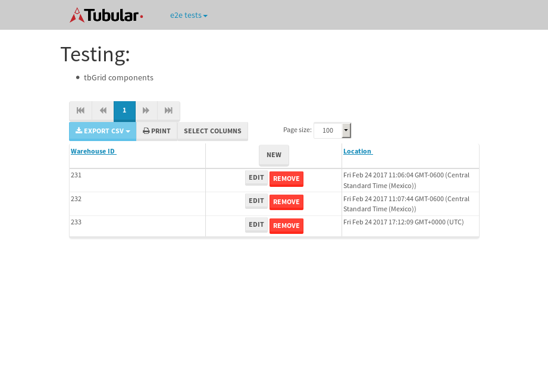

tbColumn.Grid Sorting - 25.553sTests: 5Skipped: 0Failures: 0 should sort data in ascending order then on descending order when sorting by Order Id column - 5.1sTests passed: 100.00%should order data in ascending order when click-sorting an unsorted text column - 4.855sTests passed: 100.00%should order data in descending order when click-sorting an ascending-sorted text column - 5.342sTests passed: 100.00%should order data in ascending order when click-sorting an unsorted date column - 4.952sTests passed: 100.00%should order data in descending order when click-sorting twice an unsorted date column - 5.302sTests passed: 100.00%
tbEmptyForm - 3.221sTests: 3Skipped: 0Failures: 0 should have an empty required field - 0.683sTests passed: 100.00%should not be able to click on save - 0.483sTests passed: 100.00%should load default value for numeric field - 0.45sTests passed: 100.00%
Tubular Filters.tbColumnFilter - 105.074sTests: 12Skipped: 0Failures: 0 should cancel filtering when clicking outside filter-popover - 8.213sTests passed: 100.00%should disable Value text-input for "None" filter - 6.465sTests passed: 100.00%should disable apply button for "None" filter - 6.672sTests passed: 100.00%should decorate popover button when showing data is being filtered for its column - 11.849sTests passed: 100.00%should correctly filter data for the "Equals" filtering option - 8.703sTests passed: 100.00%should correctly filter data for the "Not Equals" filtering option - 8.145sTests passed: 100.00%should correctly filter data for the "Contains" filtering option - 8.22sTests passed: 100.00%should correctly filter data for the "Not Contains" filtering option - 8.067sTests passed: 100.00%should correctly filter data for the "Starts With" filtering option - 6.906sTests passed: 100.00%should correctly filter data for the "Not Starts With" filtering option - 6.921sTests passed: 100.00%should correctly filter data for the "Ends With" filtering option - 6.831sTests passed: 100.00%should correctly filter data for the "Not Ends With" filtering option - 6.976sTests passed: 100.00%
Tubular Filters.tbColumnDateTimeFilter - 133.294sTests: 12Skipped: 0Failures: 0 should cancel filtering when clicking outside filter-popover - 6.963sTests passed: 100.00%should disable Value text-input for "None" filter - 6.559sTests passed: 100.00%should disable apply button for "None" filter - 6.709sTests passed: 100.00%should clear filtering when clicking on Clean button - 17.701sTests passed: 100.00%should decorate popover button when showing data is being filtered for its column - 11.593sTests passed: 100.00%should correctly filter data for the "Equals" filtering option - 6.718sTests passed: 100.00%should correctly filter data for the "Not Equals" filtering option - 6.809sTests passed: 100.00%should correctly filter data for the "Between" filtering option - 12.323sTests passed: 100.00%should correctly filter data for the "Greater-or-equal" filtering option - 11.767sTests passed: 100.00%should corretlly filter data for the "Greater" filtering option - 11.763sTests passed: 100.00%should correctly filter data for the "Less-or-equal" filtering option - 11.77sTests passed: 100.00%should correctly filter data for the "Less" filtering option - 12.022sTests passed: 100.00%
Tubular Filters.tbColumnOptionsFilter - 79.639sTests: 3Skipped: 0Failures: 0 should cancel filtering when clicking outside filter-popover - 8.138sTests passed: 100.00%should decorate popover button when showing data is being filtered for its column - 11.412sTests passed: 100.00%should filter column-elements in accordance to the selected filter when selecting a single option - 49.057sTests passed: 100.00%
Tubular Filters.tbTextSearch - 48.104sTests: 5Skipped: 0Failures: 0 min-chars is not set - 1.004sTests passed: 100.00%should filter data in searchable-column customer name to matching inputted text, starting from 3 characters - 6.711sTests passed: 100.00%should filter data in searchable-column shipper city to matching inputted text, starting from 3 characters - 11.889sTests passed: 100.00%should show clear button when there is inputted text only - 6.708sTests passed: 100.00%should clear filtering when clicking clear button - 16.347sTests passed: 100.00%
tbForm related components.tbCheckboxField - 6.492sTests: 2Skipped: 0Failures: 0 should save changes on "SAVE" - 3.076sTests passed: 100.00%should discard changes on "CANCEL" - 2.077sTests passed: 100.00%
tbForm related components.tbDropDownEditor - 10.831sTests: 5Skipped: 0Failures: 0 should set initial input value to the value of "value" attribute when defined - 1.718sTests passed: 100.00%should show the component name value in a label field when "showLabel" attribute is true - 1.793sTests passed: 100.00%should show a help field equal to this attribute, is present - 2.131sTests passed: 100.00%should submit modifications to item/server when clicking form "Save" - 2.744sTests passed: 100.00%should NOT submit modifications to item/server when clicking form "Cancel" - 1.932sTests passed: 100.00%
tbForm related components.tbTextArea - 14.909sTests: 7Skipped: 0Failures: 0 should set initial input value to the value of "value" attribute when defined - 1.936sTests passed: 100.00%should be invalidated when the number of chars is not in the range of "min" and "max" attributes - 2.051sTests passed: 100.00%should show the component name value in a label field when "showLabel" attribute is true - 1.832sTests passed: 100.00%should show a help field equal to this attribute, is present - 1.619sTests passed: 100.00%should require the field when the attribute "required" is true - 1.763sTests passed: 100.00%should submit modifications to item/server when clicking form "Save" - 2.624sTests passed: 100.00%should NOT submit modifications to item/server when clicking form "Cancel" - 2.084sTests passed: 100.00%
tbForm related components.tbDateEditor - 13.352sTests: 6Skipped: 0Failures: 0 should set initial date value to the value of "value" attribute when defined - 1.538sTests passed: 100.00%should be invalidated when the date is not in the range of "min" and "max" attributes - 1.956sTests passed: 100.00%should show the component name value in a label field when "showLabel" attribute is true - 1.743sTests passed: 100.00%should show a help field equal to this attribute, is present - 2.575sTests passed: 100.00%should submit modifications to item/server when clicking form "Save" - 2.521sTests passed: 100.00%should NOT submit modifications to item/server when clicking form "Cancel" - 2.329sTests passed: 100.00%
tbForm related components.tbTypeaheadEditor - 15.531sTests: 7Skipped: 0Failures: 0 should show an options list when there is an API-info/component entered-data - 1.928sTests passed: 100.00%should select the option clicked - 2.356sTests passed: 100.00%should show a "delete" button when an option/match is selected, and delete the option if button is clicked - 2.119sTests passed: 100.00%should show a label value equal to the component name when "showLabel" attribue is true - 1.649sTests passed: 100.00%should require a value when "require" attribute is true - 2.429sTests passed: 100.00%should submit modifications to item/server when clicking form "Save" - 2.788sTests passed: 100.00%should NOT submit modifications to item/server when clicking form "Cancel" - 1.733sTests passed: 100.00%
tbForm related components.tbSimpleEditor - 18.723sTests: 9Skipped: 0Failures: 0 should set initial input value to the value of "value" attribute when defined - 1.524sTests passed: 100.00%should be invalidated when the number of chars is not in the range of "min" and "max" attributes - 2.02sTests passed: 100.00%should show the component name value in a label field when "showLabel" attribute is true - 2.174sTests passed: 100.00%should set input placeholder to the value of "placeholder" attribute - 2.028sTests passed: 100.00%should validate the control using the "regex" attribute, if present - 1.775sTests passed: 100.00%should show a help field equal to this attribute, is present - 1.77sTests passed: 100.00%should require the field when the attribute "required" is true - 2.227sTests passed: 100.00%should submit modifications to item/server when clicking form "Save" - 2.808sTests passed: 100.00%should NOT submit modifications to item/server when clicking form "Cancel" - 1.88sTests passed: 100.00%
tbForm related components.tbNumericEditor - 14.988sTests: 7Skipped: 0Failures: 0 should set initial component value to the value of "value" attribute when defined - 1.644sTests passed: 100.00%should be invalidated when the entered number is not in the range of "min" and "max" attributes - 2.376sTests passed: 100.00%should show the component name value in a label field when "showLabel" attribute is true - 1.952sTests passed: 100.00%should show a help field equal to this attribute, is present - 1.621sTests passed: 100.00%should require the field when the attribute "required" is true - 1.817sTests passed: 100.00%should submit modifications to item/server when clicking form "Save" - 2.919sTests passed: 100.00%should NOT submit modifications to item/server when clicking form "Cancel" - 2.151sTests passed: 100.00%
tbForm Connection Error NoModelKey - 2.917sTests: 1Skipped: 0Failures: 0 tbForm connection error functionality - 0.607sTests passed: 100.00%
tbForm Connection Error NoServerUrl - 2.383sTests: 1Skipped: 0Failures: 0 tbForm connection error functionality - 0.448sTests passed: 100.00%
tbGridComponents - 8.699sTests: 6Skipped: 0Failures: 1 should add item with newRow method - 2.07sTests passed: 100.00%should add item with newRow method and cancel action - 0.853sTests passed: 100.00%should update item with tbSaveButton - 0.812sFailed: ElementNotVisibleError✗Tests passed: 0.00%should NOT update item on cancel Update action - 1.475sTests passed: 100.00%should remove item with tbRemoveButton - 1.256sTests passed: 100.00%should NOT remove item on cancel Remove action - 0.896sTests passed: 100.00%
tbGridPager.navigation buttons - 8.536sTests: 1Skipped: 0Failures: 0 should perform no action when clicking on the numbered navigation button corresponding to the current-showing results page - 1.264sTests passed: 100.00%
tbGridPager.navigation buttons.first/non-last results page related functionallity - 3.713sTests: 2Skipped: 0Failures: 0 should disable "first" and "previous" navigation buttons when in first results page - 1.656sTests passed: 100.00%should enable "last" and "next" navigation buttons when in a results page other than last - 2.057sTests passed: 100.00%
tbGridPager.navigation buttons.last/non-first results page related functionallity - 3.559sTests: 2Skipped: 0Failures: 0 should disable "last" and "next" navigation buttons when in last results page - 1.779sTests passed: 100.00%should enable "first" and "previous" navigation buttons when in a results page other than first - 1.774sTests passed: 100.00%
tbGridPager.page navigation - 7.505sTests: 5Skipped: 0Failures: 0 should go to next results page when clicking on next navigation button - 1.541sTests passed: 100.00%should go to previous results page when clicking on previous navigation button - 1.379sTests passed: 100.00%should go to last results page when clicking on last navigation button - 1.314sTests passed: 100.00%should go to first results page when clicking on first navigation button - 1.889sTests passed: 100.00%should go to corresponding results page when clicking on a numbered navigation button - 1.381sTests passed: 100.00%
tbGridPagerInfo - 4.173sTests: 2Skipped: 0Failures: 0 should show text in accordance to numbered of filter rows and current results-page - 1.404sTests passed: 100.00%should show count in footer - 0.512sTests passed: 100.00%
tbPageSizeSelctor - 10.222sTests: 4Skipped: 0Failures: 0 should filter up to 10 data rows per page when selecting a page size of "10" - 2.207sTests passed: 100.00%should filter up to 20 data rows per page when selecting a page size of "20" - 1.467sTests passed: 100.00%should filter up to 50 data rows per page when selecting a page size of "50" - 2.429sTests passed: 100.00%should filter up to 100 data rows per page when selecting a page size of "100" - 2.331sTests passed: 100.00%
tbRowSelectable - 9.685sTests: 2Skipped: 0Failures: 0 selected rows - 4.67sTests passed: 100.00%unselected rows - 3.279sTests passed: 100.00%
tbSingleForm - 17.084sTests: 8Skipped: 1Failures: 0 should load correct info - 0s***Skipped***Tests passed: 0%should change customer name - 2.293sTests passed: 100.00%should save it - 3.072sTests passed: 100.00%should clear the inputs - 2.195sTests passed: 100.00%should update - 2.476sTests passed: 100.00%should reset editor - 2.483sTests passed: 100.00%should not save if not Changes - 2.296sTests passed: 100.00%should not be able to click on save - 2.268sTests passed: 100.00%
{kind=link}